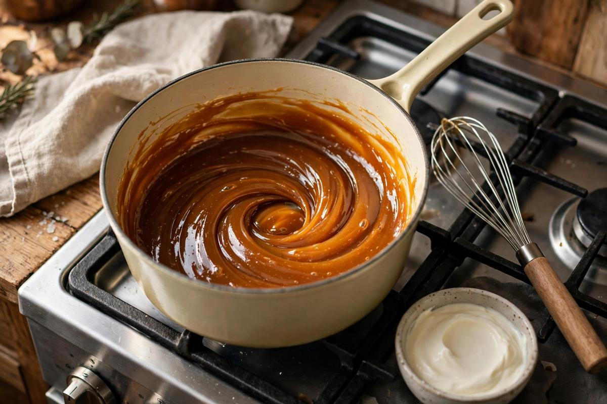

Seized Caramel Rescue: Grainy, Lumpy, or Burnt, and Which One You Actually Have

Here is the misconception that ruins more caramel than heat ever does: seized is not one problem. It is three different disasters sharing a single insulting word, and the rescue that fixes the first one does nothing for the second and wastes good cream on the third. A grainy pan, a lumpy pan, and a burnt pan all get called seized, usually at high volume, usually while the sugar is still deciding what to do next. Slow down. Read the pan first. The pan is telling you exactly which disaster it is, and each one has its own way back.
Three disasters wearing one name
The grainy one is crystallization. Table sugar is a crystal by nature, neat stacks of sucrose molecules. Dissolved in water and boiled, the syrup becomes supersaturated, holding more sugar than it should, and the molecules are looking for an excuse to stack up again. One stray grain is all the excuse they need: an undissolved crystal from the start, a splash that dried on the pan wall, a dirty spoon, or stirring that flicks syrup up the sides. The seed starts a chain reaction and the whole pan turns sandy in seconds.
The lumpy one is not crystallization at all. Caramel sauce means pouring cream into sugar sitting at about 170°C (338°F). The cream is far cooler, the caramel steams and bubbles like it has been insulted, and some of the sugar hardens into glassy lumps. Nothing crystallized. The sugar simply cooled suddenly and solidified, the way a puddle freezes. Different cause, different rescue, much better prognosis.
The burnt one is chemistry, finished. Colour is flavour in caramel. Light caramel sits near 160°C (320°F), deep amber runs 170 to 180°C (338 to 356°F), and past about 185°C (365°F) the sugar turns burnt and bitter. The trip from deep amber to scorched can take under 30 seconds. No water, cream, or optimism reverses that. Burnt is the one disaster on this page with no rescue, and knowing that early is its own kind of rescue.
The triage table: read the pan before you touch it
| What the pan shows | What it actually is | First move |
|---|---|---|
| Cloudy, sandy, gritty all through, often before any cream went in | Crystallization, seeded by a stray grain | Off the heat. Warm water, a tablespoon at a time, then gentle heat |
| Smooth sauce with hard glassy lumps, right after the cream went in | Cream shock, sugar that solidified on contact | Back on low heat, whisk 2 to 3 minutes until the lumps melt |
| Hard clumps in a dry pan, white grains coated in melted sugar | Dry caramel clumping, partly melted sugar wrapping unmelted grains | Moderate heat and patience, nudge the dry centre into the melted edges |
| Very dark, smoking, smells acrid instead of rich | Burnt, past about 185°C (365°F) | Stop. Discard it, wash the pan, start over on a lower flame |
One safety note before any rescue starts. Hot sugar syrup can cause serious burns, far worse than boiling water at the same splash size. Long sleeves, a long handled whisk, and children well away from the stove are part of the recipe, not decoration.
Rescue 1: crystallized and grainy
The fix for crystals is to dissolve them properly this time, then cook the syrup back up under stricter house rules. The procedure below is scaled to a standard batch built on 200 g (1 cup) of sugar.
- Get it off the heat and let it settle. Pull the pan off the burner and give it about 30 seconds. Rushing hot sugar is how rescues become second disasters.
- Add warm water a little at a time. Start with 1 tablespoon (15 mL) of warm water per 250 mL (1 cup) of caramel, up to about 60 g (60 mL) for a full batch. Warm, not cold and not boiling. Cold water shocks the sugar, boiling water spits.
- Return to low heat and stir gently. The crystals dissolve slowly, usually over 3 to 5 minutes. This is the one stage where gentle stirring is allowed, because the goal is dissolving, not boiling.
- Check for grit. The syrup should run completely clear and smooth off the spoon. Any remaining grain is a seed for a repeat performance, so keep going until none are left.
- Cook it back up, hands off. Once clear, let it boil again without stirring. Swirl the pan by the handle if one side colours faster, wash any crystals off the walls with a wet pastry brush, and take it to deep amber, 350 to 360°F (177 to 182°C), for sauce.
- Know the limit. A rescued batch may run slightly thinner from the added water, though the flavour holds up well. If the pan went completely opaque and grainy all the way through, or it smells burnt rather than rich, skip the rescue and restart. That call saves more time than it costs.
Success looks like this: the syrup pours in one glossy ribbon, coats a spoon evenly, and leaves no sand on the tongue when a cooled drop is tasted.
Rescue 2: lumps from the cream
This one is almost disappointingly simple, which is welcome news mid disaster. Put the pan back over low heat and whisk. The glassy lumps are just solid caramel sitting in warm cream, and they melt back in within a minute or two of steady whisking, or 2 to 3 minutes for a stubborn batch. A splash of warm cream helps if the sauce has gone very thick. Then carry on with the butter as planned.
The prevention is built into the pour. Warm the cream to about 120 to 140°F (49 to 60°C) before it goes anywhere near the sugar, pour it in a slow stream while whisking, and stand back, because caramel at 350°F (177°C) foams and rises hard when liquid hits it. A pot at least three times deeper than the volume of sugar is not fussy equipment advice. It is the difference between sauce and a stovetop event.
The dry pan clump, briefly
Dry caramel, sugar melted alone with no water, fails its own way. Stir too early and partly melted sugar coats the unmelted grains, forming hard clumps that look exactly like crystallization but are not. The rescue is restraint: keep the heat moderate, let the sugar liquefy around the edges first, then gently nudge the dry sugar from the middle into the melted parts with a heatproof spatula. Given a few patient minutes, the clumps usually melt on their own.
The prevention stack
Every rescue above has a cheaper prevention, and they stack neatly into four habits.
- Dissolve fully before boiling. Stir sugar and water over medium heat until the liquid is completely clear and no grit is felt on the spoon. Only then let it boil, and from that moment, swirl instead of stirring.
- Keep the walls clean. Brush crystals down with a wet pastry brush, or put a lid on the pan for a minute or two right after it boils so the steam washes the walls for you. Start with a clean pan and clean tools, since old dried sugar is a seed with a head start.
- Add an interfering agent. About 1 tablespoon (15 mL) of corn syrup per 200 g (1 cup) of sugar puts glucose molecules in the way of the sucrose stacking. A squeeze of lemon juice or a pinch of cream of tartar does a similar job by inverting some of the sucrose. In sauces, butter and cream coat the sugar molecules and interfere for free.
- Pull it early, not late. Sugar keeps cooking from the heat of the pan after it leaves the burner, so stop about 5°F (3°C) before the target colour. Deep amber waits for nobody.
Storage, and the fridge sequel nobody warns about
One last plot twist: a sauce that turns grainy days later in the fridge is true crystallization, arriving late. The same corn syrup spoonful that protects the pot protects the jar, and sauces made with it stay smooth much longer. Store cooled sauce in an airtight container in the refrigerator for up to 2 weeks, or freeze it for up to 3 months and thaw it in the fridge. Reheat gently, in a saucepan over low heat or in the microwave on low power, and never boil it a second time. A sauce that comes out of the fridge too thick loosens with gentle warmth and a spoonful of warm cream. A sauce that comes out grainy goes back through Rescue 1, smaller and sadder, but still saveable.
And the pan, whatever happened in it: never chip hardened caramel out. Fill it with water, simmer for 10 to 15 minutes, and the whole crime scene dissolves. Pour it out, wash as normal, and start the next batch with a clean pan and a calmer definition of the word seized.
— June Callahan, Food Writer